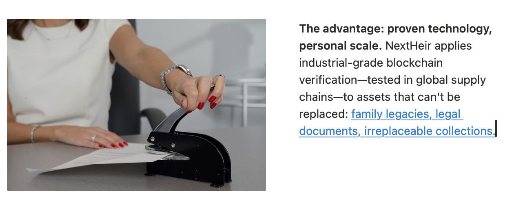

Element United Launches NextHeir — Blockchain Verification for Valuable Assets
Universal asset registry uses mining-grade blockchain to create permanent digital records for heirlooms, real estate, art, and legal documents
FOR IMMEDIATE RELEASE
Salt Lake City, Utah – November 2025
Element United today launched NextHeir, a blockchain platform that creates permanent, verified digital records for valuable assets—from family heirlooms to real estate titles, wedding rings to wills, fine art to legal documents.
NextHeir creates immutable digital certificates for any asset that matters. Individuals and institutions can upload photos, appraisals, legal documents, and memory videos; share access with family, attorneys, insurance agents, or future buyers; and track ownership across generations and transactions. Each record is permanent, verifiable, and tamper-proof.
The platform uses the same blockchain verification technology Element United developed to trace ethical gold from mine to market. By starting with assets people already care about—grandmother's ring, the family home, a Rembrandt—Element United is proving the system works before scaling it to transform how entire industries verify their supply chains.
The advantage: proven technology, personal scale. NextHeir applies industrial-grade blockchain verification—tested in global supply chains—to assets that can't be replaced: family legacies, legal documents, irreplaceable collections.
Enterprise-ready infrastructure. NextHeir supports individual accounts, family vaults, and institutional partnerships—with API access, volume licensing, and white-label options for law firms, insurance providers, and luxury brands.
Who Uses NextHeir:
Families: Preserve heirlooms and settle estates
Legal & Financial: Titles, trusts, probate documentation
Museums & Collectors: Complete provenance for valuable pieces
Luxury Goods: Certificates and supply chain proof
Valuable Assets: Anything worth insuring or inheriting
Real Problems, Real Solutions:
Inheritance disputes? NextHeir documents immutably—signatures verified, reducing conflicts before they start.
Lost appraisals? Everything's preserved permanently—no more missing records.
Provenance gaps? Fill them with verified, timestamped documentation that meets the requirements of collectors and insurers.
Insurance claims? Your digital certificate is always accessible—proof when you need it most.
"After recent events, we've learned that even the world's most famous museums aren't secure enough," said Monsieur Poirot, Curator of Decorative Arts at the Louvre. "Thieves can take the crown jewels—but with NextHeir, they can't erase the provenance. Perhaps we should have been documenting digitally all along."
"I own art worth eight figures, and until NextHeir, my most valuable provenance document was a crumpled receipt from 1987," said Maximilian von Habsburg, Private Collector. "My estate attorney is significantly less stressed now."
"We built systems to trace gold from mine to market," said Scott Lomu, President of Element United. "NextHeir proves that system works—by protecting what already matters to people. Then we scale it to change industries."
The Bigger Picture
NextHeir is Element United's proof-of-concept for universal asset verification—demonstrating how blockchain can serve both individual legacies and enterprise-scale authentication. From estate planning to institutional collections, NextHeir provides the infrastructure for permanent, verifiable records across markets.
For individuals: Visit ElementUnited.earth to preserve your legacy.
For professionals and institutions: Contact Element United for partnership and enterprise solutions.
About Element United
Element United provides blockchain-based verification systems spanning natural resource management, mining operations, and asset preservation. Through platforms like Identify.earth, STRIA™, CORE™, and NextHeir, Element United creates transparent, verifiable records that bridge industries—from ethical extraction to family heirlooms, from mine to market to memory.
Every element tells a story. Element United built the system that maps them all—making trust infrastructure.
Media Contact
Element United
Press Relations
press@elementunited.com